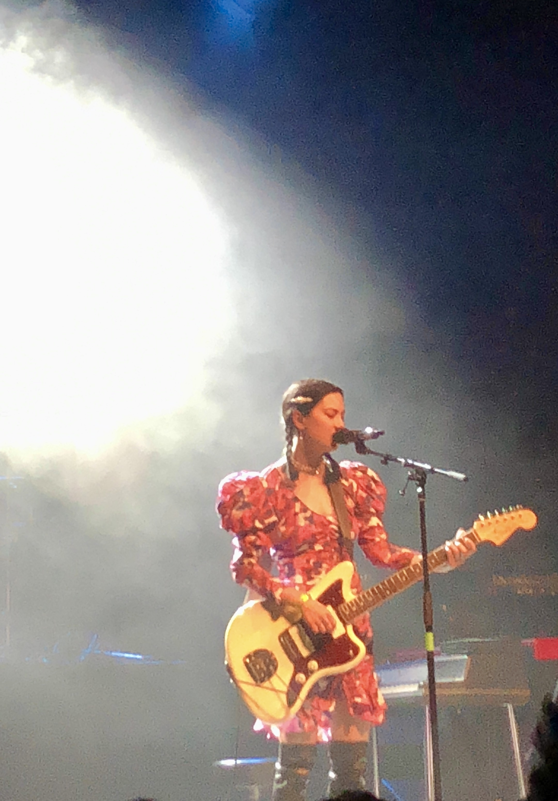

As an experience designer, I embrace introspective research between the user and the interface. My design mantra is to leave the user with less contemplation, more fascination. I’m eager about the unseen work behind design — online identities, inclusion, and ethics.
Growing up, my best friend was the internet and art which led me to study Cognitive Science with a concentration in Human-Computer Interaction at the University of California, Santa Cruz.
After hours, I’m comforted by zines, B-roll, and slow-burn cinema. My life mantra is that the older we get, the more we should accept and embrace pop music.